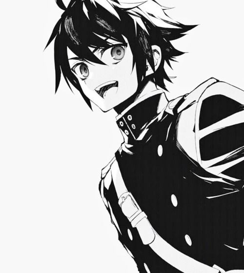

Yuuichiro Hyakuya
Yūichirō Hyakuya (百夜 優一郎, Hyakuya Yūichirō) nacido como Yūichirō Amane (天音 優一郎 Amane Yūichirō) es el protagonista de la historia.
Es miembro del Ejército Demonio Imperial Japonés, así como también miembro del escuadrón de Shinoa en el Escuadrón Demonio de la Luna. Junto con Mikaela Hyakuya y algunos otros, posee el gen del serafín.
Hace apariciones en las precuelas "Owari no Seraph: Guren Ichonose: Catástrofe a los dieciséis" y "Owari no Seraph: La Historia del vampiro Michaela."
Apariencia
Yūichirō tiene el cabello azabache, un poco largo y bastante desordenado. Posee ojos verdes y grandes (en comparación con la mayoría de los otros personajes masculinos de la serie), además cejas espesas.
Por lo general viste el típico uniforme escolar japonés con una camiseta blanca debajo.
Después de unirse al Ejército Demonio Imperial Japonés, usa un uniforme el cual consiste en una chaqueta de color negro con detalles de color verde claro. Pantalones grises oscuros y botas negras que van debajo de sus pantalones. A veces se le puede ver usando el sombrero del Ejército Demonio Imperial Japonés.

Página creeada por Valentina Vargas Sánchez